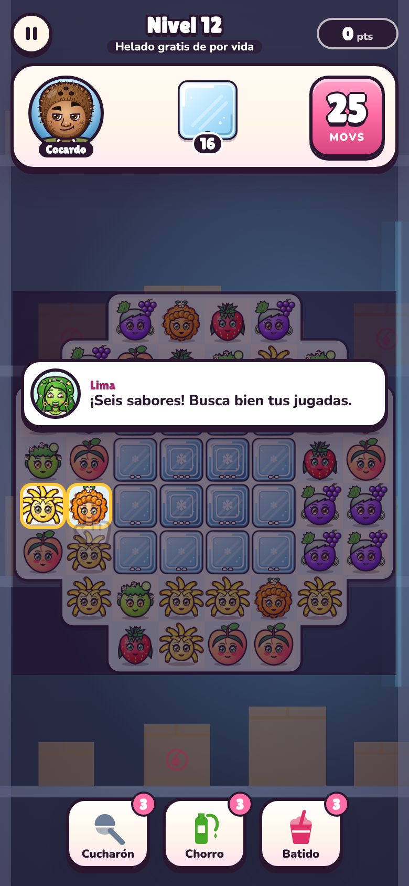

Una frutinovela que se juega: junta 3 frutas, descongela a las víctimas del heladero y sigue la historia de La Nieve de Lima capítulo a capítulo. Gratis para empezar, en tu celular y sin instalar nada.
Niveles 1 al 10 gratis · Juego completo: US$1,99, pago único · Sin anuncios · Funciona en iPhone, Android y PC

La historia avanza capítulo a capítulo, con sus diálogos y sus «CONTINUARÁ…». Tú eres el ayudante secreto que descongela a las víctimas.
Lima, Cherry, Don Piña, Banano… y Cocardo riéndose cada vez que pierdes. Escenas con diálogos y cliffhangers de final de capítulo.
El mismo tablero para todo el mundo cada día. Entra con Google, elige tu apodo y compite con tus amigos por la racha más larga.
Activa «Grabar clips» y cada partida queda en video vertical con tu apodo, lista para TikTok, Reels o Shorts.
Si jugaste Candy Crush o Royal Match, ya sabes. Si no, el nivel 1 te enseña en 30 segundos.
Un tablero nuevo cada día, igual para todos. Solo cuenta tu primer intento, así que piénsalo bien. Comparte tu resultado con emojis, como en Wordle:
Todo el arte del juego está dibujado en vectores, con música y efectos propios.
Empiezas gratis. Si te gusta, el resto del juego se abre con un solo pago.
US$0sin tarjeta y sin cuenta
US$1,991,99 € en la zona euro · impuestos incluidos
Se compra dentro del juego, al llegar al nivel 11 o desde Ajustes.
En otros países ves el total en tu moneda si Paddle la admite (si no, en dólares) antes de pagar. Sin suscripción, sin anuncios y sin monedas virtuales. El pago lo procesa Paddle.com, nuestro revendedor y Merchant of Record. Tienes 14 días para pedir el reembolso: Política de reembolsos · Términos y condiciones.
Un juego tipo junta 3 con la historia de La Nieve de Lima, una frutinovela de helados: Cocardo descubrió que su congelador viejo hace el helado más rico del mundo… con frutas adentro. Tú rescatas a las víctimas mientras la historia avanza capítulo a capítulo. Es gratis para empezar.
Empezar es gratis: los niveles 1 al 10 y el Reto Diario no cuestan nada. El juego completo (del nivel 11 en adelante, también los capítulos que se publiquen después) es un pago único de US$1,99, o 1,99 € en la zona euro, impuestos incluidos; en otros países ves el total en tu moneda si Paddle la admite (si no, en dólares) antes de pagar. Sin suscripción y sin anuncios. Ver precio.
Cocardo: ¡Rescate Helado! es un juego de Prince Ray Peratta Espinoza, que lo crea y lo publica, y tiene todos los derechos del juego y de sus personajes. Arte, música y código propios. Lo vende a través de Paddle.com, su revendedor: la compra del juego completo se hace a Paddle (Términos).
Tienes 14 días desde la compra para pedir el reembolso, sin dar motivos, en paddle.net o escribiéndonos a soporte@cocardo.app. Los detalles están en la Política de reembolsos.
No hay que instalar nada: se juega en el navegador de cualquier celular o computadora. Si quieres tenerlo como app, en el menú del navegador elige «Añadir a pantalla de inicio».
Toca «Entrar» en la portada e inicia sesión con Google, o crea un apodo sin cuenta. Tu primer intento del Reto Diario entra al ranking del día; tus estrellas, al ranking general.
Sí, en tu navegador. Si entras con tu cuenta, también en la nube: puedes seguir en otro celular sin perder nada. Qué datos se guardan y para qué: Política de privacidad.